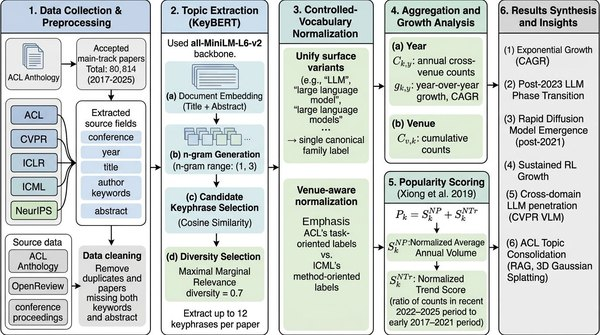

Topical Phase Transitions in Artificial Intelligence Research: Large-Scale Evidence and an Early-Warning Signature for Emerging Topics

In one sentence. An analysis of 80,814 main-track papers from ACL, CVPR, ICLR, ICML and NeurIPS (2017–2025) showing that AI topics advance through abrupt cross-venue phase transitions, with an early-warning signature for emerging topics.
Abstract
Do research topics in artificial intelligence grow gradually, or do they advance through abrupt, detectable jumps? Analyzing 80,814 accepted main-track papers from five premier AI conferences (ACL, CVPR, ICLR, ICML, NeurIPS) spanning 2017 to 2025, we show major AI topics advance through topical phase transitions: remaining marginal for years, then surging across venues within one to three years. Large language models became the dominant cross-venue topic by 2025, diffusion models rose with comparable abruptness, and language-model methods crossed into computer vision via vision-language models, whereas reinforcement learning compounded smoothly, distinguishing genuine phase transitions from ordinary growth. This structure is our primary contribution: a large-scale, cross-venue characterization of how AI research reorganizes. We then ask whether a transition leaves a detectable footprint before it peaks. We define an early-warning signature, four publication-dynamics criteria frozen on 2017-2021 data, and evaluate it out of sample on 2023-2025 transitions, obtaining a precision of 27% and recall of 63% against a 13.5% base rate. Applied to 2025 data, the signature flags reasoning and test-time compute, agentic AI, multimodal LLMs, retrieval-augmented generation, and world models as topics to monitor over 2026-2028. The source code is also publicly available on GitHub at https://github.com/KurbanIntelligenceLab/ai-phase-transitions.
BibTeX
@article{khanbayov2026topical,
title = {Topical Phase Transitions in Artificial Intelligence Research: Large-Scale Evidence and an Early-Warning Signature for Emerging Topics},
author = {Khanbayov, Rasul and Kurban, Hasan},
journal = {arXiv preprint arXiv:2606.12828},
year = {2026}
}